This page is currently a work in progress.
| Last updated: Exalt Version 5.14.0.0 (July 2025) |
|---|
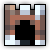 Music: Long Time Cold - Forgotten Music: Long Time Cold - Forgotten
|
| Dust Drops | ||
|---|---|---|
| 42-46 |
39-44 |
36-40 |
The Ice Citadel is an endgame dungeon that introduces Blizzard, an effect similar to the suffocation mechanic from dungeons such as Ocean Trench. This dungeon is one of the Exaltation dungeons, boosting Speed.
The portal to the Ice Citadel has a chance to drop from both the Monstrous Grizzly and Snow Yeti.
This dungeon must be completed to earn ‘Explosive Journey‘, ‘Conqueror of the Realm‘, ‘Hero of the Nexus’ and ‘Realm of the Mad God’ fame bonuses.
“Hear the call beneath the ice, where Esben—last scion of the Runic Tribes—endures a torment no soul was meant to bear. His children of shadow and sorrow still guard his prison, birthed from madness and longing in a world gone silent. Will you brave the frost and shattered time to free him—or leave a broken god to dream alone forever?”
- Release description
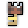 The Ice Citadel Key is available in the Nexus for 200  .
.
The Ice Citadel Guide has not been created yet.
| 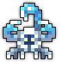 Iceion |
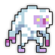 Yeti |
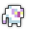 Small Yeti |
 Lizicle |
 Lilzicle |
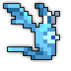 Snow Bat |
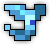 Snow Bat Pup |
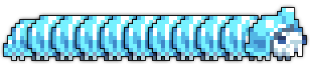 Glacierpede |
| 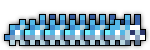 Larval Glacierpede |
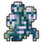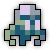 Creepy Weird Dark Spirit Mental Manifestation |
The Ice Citadel is part of the Epic Quest pool from the Tinkerer and has one associated quest.
| Name | Description | Items Needed | Reward |
|---|---|---|---|
| Psychological Terror | Confront what remains of Esben and free him from his psychological nightmare. | 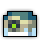 |
TBA
Introduced in Exalt Version 5.14.0.0 (July 2025), this dungeon completely replaced the Ice Cave. Notably, the Ice Cave was a midgame dungeon that did not grant any exaltation boosts.